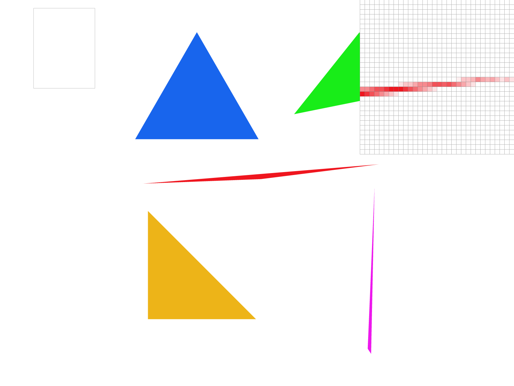
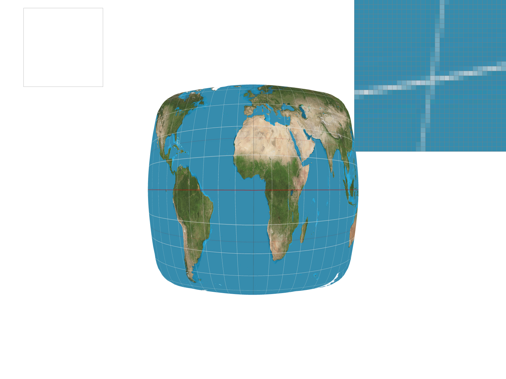
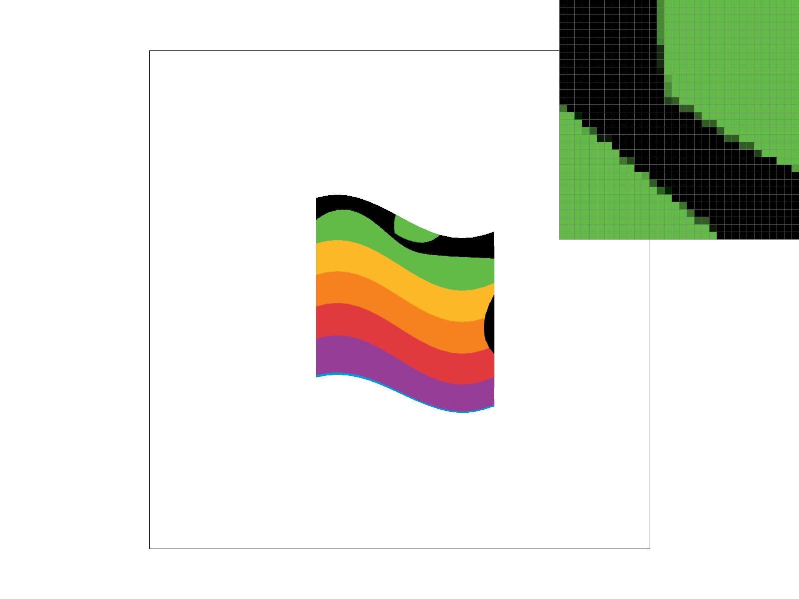

In this homework, I first implemented a simple rasterizer. We can use 2 method to determine whether a pixel is inside the triangle, one is the three line method, the other is the barycentric coordinates.
Then I implemented a supersampling algorithm to antialiase, I actually have a hard time doing that, because I have to make sure I up-scale and down-scale the resolution correctly.
After that, I updated the robot.svg to make the cubeman show his muscles by rotating and translating his forearms.
After that, I implemented the pixel sampling and level sampling for texture mapping. I have a great time doing this part,
really learned a lot about the nature of mipmap and how it works. Also got really comfortable playing with lerp.
For this part, I implemented a simple trangle rasterization algorithm.
The algorithm is:
1. Find the bounds of the triangle by calculate the minimum and maximum x and y values of the vertices.
2. Iterate through all the pixels in the trangle bounds.
3. Determine whether the pixel is inside the triangle by the three lines method.
4. If inside, then the pixel should be colored.
This algorithm is no worse than one that checks each sample within the bounding box of the triangle because it just checks the pixels inside the triangle bounds.
Here is a screenshot of basic/test4.svg:
For this part, I implemented a traditional supersampling algorithm.
Supersampling is useful because it first renders the image at a higher resolution and then dwonsamples to original resolution,
this can help to reduce the aliasing effect.
The modifications I made to the rasterization pipeline are:
1. Change the sample_rate size to be width * height * sample_rate.
2. Scale the pixel coordinates to the sqrt(sample_rate) size to get the higher resolution image.
3. Change fill_pixel function to fill the color of the samples in the pixel (Also scaled to sqrt(sample_rate)).
4. Downsampling: Change the relove_to_buffer function to average the color of the sqrt(sample_rate) * sqrt(sample_rate) 'small pixel's to filled in original scaled pixel.
Here is a screenshot of basic/test4.svg with the default viewing parameters and sample rates 1, 4, 9 and 16 to compare them side-by-side:
|
|
|
|
|

|
I updated the robot.svg, to make the cubeman show his muscles by rotating and translating his forearms.
Here is a screenshot of my_robot.svg:
In my view, barycentric coordinates are a set of three numbers that represent the position of a point in a triangle.
The barycentric coordinates of a "weighted-average" point in a triangle are the weights of the vertices of the triangle that sum to 1.
So it's like a 3 dimensional coordinate system, but the three coordinates sum to 1.
Here is a single triangle with one red, one green, and one blue vertex, which should produce a smoothly blended color triangle:
Pixel sampling is just to sample the color of a texture at a point in the texture.
In the algorithm, I first using the barycentric coordinates to find the texture coordinates of the point in the triangle.
Then I use the texture coordinates to find the color of texel at that point.
The two pixel sampling methods are:
1. Nearest sampling: Simply takes the color of the texel closest to the texture coordinates.
2. Bilinear sampling: Do two lerps(linear interpolation) by taking the weighted average of the colors of the four texels closest to the texture coordinates, weighted by the distance from the texture coordinates.
Here is a screenshot of svg/texmap/earth.svg with nearest sampling at 1 sample per pixel, nearest sampling at 16 samples per pixel, bilinear sampling at 1 sample per pixel, and bilinear sampling at 16 samples per pixel:
|
|

|
|
|
|
Level sampling brings an important concept called mipmaps, which is a set of textures with different resolutions.
Thus with only 4/3 times the memory, we can get a better texture mapping effect.
The first step after we have a mipmap is to calculate the barycentric coordinates of the point in the triangle.
Then we use the barycentric coordinates to find the texture coordinates of the point in the triangle in texture space (a.k.a. uv space).
Then we calculate the level of the mipmap we want.
Finally, we use the texture coordinates and the level to find the color of the texel at that point.
My algorithm is:
1. First calculate the barycentric coordinates of the point in the triangle.
2. Then I use the barycentric coordinates to find the texture coordinates of the point in the triangle in texture space (a.k.a. uv space).
3. After that, if the level sample method is L_ZERO, I just use the texture coordinates to find the color of the texel at that point.
4. Else if the level sample method is L_NEAREST, I use the texture coordinates to find the color of the texel at that point in the mipmap level that is closest to the original texture coordinates. So I rounded the final level to integer to get the final level.
5. Else if the level sample method is L_LINEAR, I use the texture coordinates to find the color of the texel at that point in mipmap, this time I directly return a float. Then I perform a lerp between the two colors of the two levels to get the final level.
6. After that, I use the texture coordinates and the level to find the color of the texel at that point.
Tradeoff analysis for pixel sampling, level sampling, or the number of samples per pixel:
Speed: Pixel sampling > Level sampling > Number of samples per pixel
Memory Usage: Number of samples per pixel (sample_rate * original) > Level sampling ((4/3) * original) > Pixel sampling (original)
Antialiasing Power: Number of samples per pixel > Level sampling > Pixel sampling
Here is a screenshot of a colored apple logo with L_ZERO & P_NEAREST, L_ZERO & P_LINEAR, L_NEAREST & P_NEAREST, and L_NEAREST & P_LINEAR:
|
|
|
|

|
|